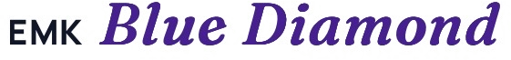

Même logo, mêmes textes, même parcours (accueil, quiz, offre). Seule l’identité change. Toutes sur fond clair, contrastes AA vérifiés. Maquettes, rien n’est en ligne.
Les écrans clairs de ta pub, en vrai : un mot s’allume en bleu électrique, le fil d’or avance, l’indigo n’apparaît qu’en cartes.
Ce n’est pas toi.
Plus Jakarta Sans : la police de ta pub, pour les titres et le texte.
IBM Plex Mono · 01 · Ton bilan · 54 %
Force : continuité totale avec la pub (la personne reconnaît ce qu’elle vient de voir).
Limite : le violet du logo reste seul dans son coin.
Le « Blue Diamond » du logo devient le système : coins taillés comme une facette, l’or sert de sertissage, l’italique violet porte l’émotion.
Ce n’est pas toi.
Lora, cousine du « Blue Diamond » du logo, avec Figtree pour lire facilement.
◆ Tarif de lancement
Force : la plus « premium », la plus liée au logo et au certificat.
Limite : s’éloigne des couleurs de la pub, ton plus coaching que tech.
« Building » au pied de la lettre : papier quadrillé de plan, annotations « fig. », surligneur or, bon de commande et tampon de garantie.
Ce n’est pas toi.
Bricolage Grotesque, étroite et chaleureuse, avec JetBrains Mono pour les notes.
fig. 01 · module 3 · 06 / 13
Force : la plus mémorable, ne ressemble à aucun concurrent, montre ce qu’on construit.
Limite : plus « atelier » que « prestige », à doser sur toute une page.
Piste A comme base, parce que la personne arrive depuis ta pub et doit reconnaître tout de suite le même monde (mêmes couleurs, même police, même fil d’or). On lui emprunte deux idées de la piste C qui vendent : le bon de commande pour l’offre (la valeur se lit ligne par ligne) et la liste « ce que tu vas construire, module par module » dans l’accueil. La piste B reste la bonne référence pour le certificat et les supports « prestige ».